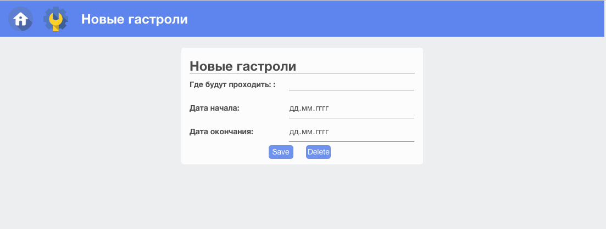
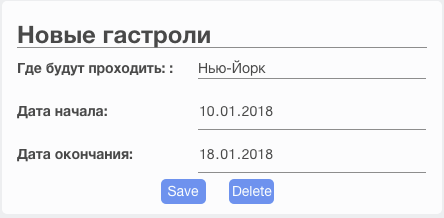
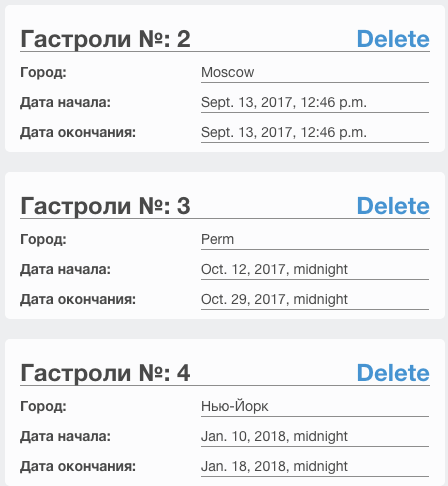

3. Добавление карточек¶
В завершающей части руководства, мы уделим основное внимание работе с добавлением карточек.
При нажатии на иконку добавления, приложение откроет окно с формой.

Рис.1 - Карточка формы добавления
Во время заполнения формы, вы в любой момент можете сбросить заполненные ранее строки, нажав на кнопку Delete.
Если же вы заполнили все поля и хотите добавить новую карточку, необходимо нажать на кнопку Save

Рис.2 - Добавление новой карточки
После добавления карточки, она появится в списке остальных карточек.

Рис.3 - Провека добавления карточки
Заключение¶
В данном руководстве была описана работа Web-приложения на уровне пользователя. Рассказан и показан функционал сайта, такие как: просмотр карточек таблиц, добавление карточек таблиц.
<- Глава 2 Главное меню ->